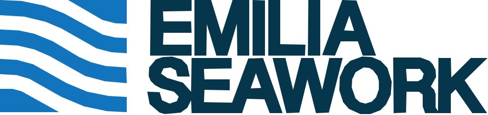
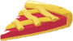

Bollettino operativo
Preallerta sperimentale di onda lunga davanti a Marsa El Brega. Le informazioni sono pensate per programmare verifiche e precauzioni di cantiere, non per autorizzare le lavorazioni.
Lettura delle previsioni…
Consultazione dei dati Copernicus Marine.
Panoramica giornaliera
Caricamento…
«Nessun segnale» significa solo che le soglie esplorative non risultano superate nei dati disponibili; non equivale a mare sicuro.
Dettaglio degli episodi
Caricamento…
Rispetto alla previsione precedente
Come interpretarlo
Il programma segnala un episodio quando almeno due ore consecutive soddisfano uno di questi criteri di screening: swell principale o secondario con altezza almeno 0,20 m e periodo medio almeno 8 s; oppure altezza significativa totale almeno 0,35 m e periodo di picco almeno 8 s.
Si tratta delle soglie esplorative di Marine Watch, non di limiti di sicurezza della banchina. Le ore rappresentano la permanenza sopra soglia davanti al porto, non la durata dimostrata della risacca interna.
Fonte: Copernicus Marine Service, Med-WAV 4,2 km, previsioni numeriche non osservazioni. Il timestamp di esportazione non prova l'identità del ciclo di modello. Valutazione HSE indipendente obbligatoria.